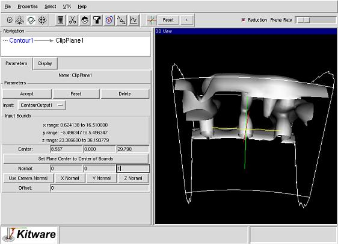

Step 6
Next let's use the Clip utility. Remove the cut filter by clicking on
Delete. Now create an isosurface of density (use a value of 0.3)
(see the IsoSurface tutorial for details on how to create contours).
To clip the isosurface, click on the Clip button on the toolbar.
 Push Accept to use the default clip values (plane normal is in the
positive z direction and the center is the center of the bounds).
Note the direction of the clip can be changed by changing the sign of
the normal. Experiment with different plane normals and center positions.
Push Accept to use the default clip values (plane normal is in the
positive z direction and the center is the center of the bounds).
Note the direction of the clip can be changed by changing the sign of
the normal. Experiment with different plane normals and center positions.

Last modified: Thu Oct 25 09:22:29 EDT 2001